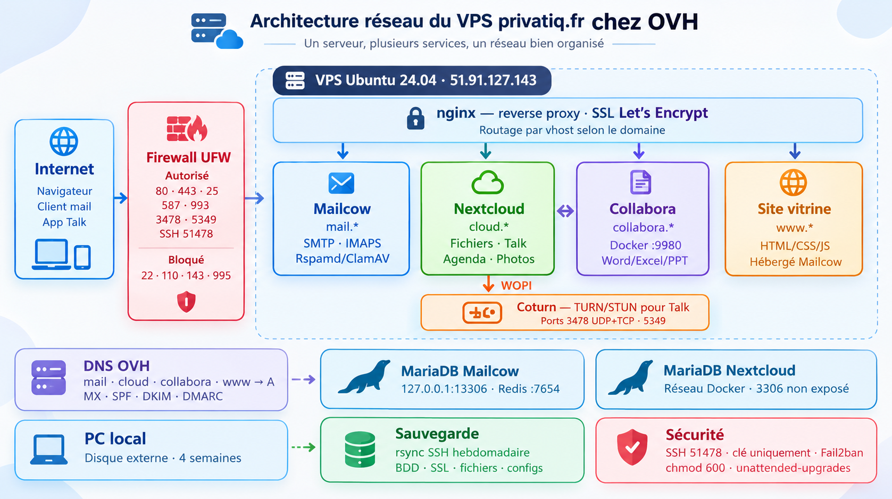

Manager en Ingénierie Informatique, Cybersécurité
Cursus Bac+5 orienté audit, pentest et sécurité des systèmes d'information, mené en alternance.
Projet : CTF « Une nuit pour hacker »
Ce que j'ai fait
- Co-organisation de l'événement
- Conception de challenges : Active Directory, WiFi, Web, SQLi, Reverse, OSINT
- Infrastructure d'hébergement sous Proxmox, derrière un pare-feu Fortigate
Difficultés et retour d'expérience
- J'ai déployé le stockage distribué Ceph avant de constituer le cluster Proxmox. Il aurait fallu faire l'inverse : monter le cluster d'abord, puis Ceph par-dessus.
- Le switch fourni ne faisait pas de routage comme prévu. Nous avons basculé sur un Fortigate en périphérie pour assurer le routage et la solution de secours.
Schéma de l'infrastructure
Principes de conception
Isolation
Les joueurs n'atteignent jamais le VLAN d'administration. Seule la VM CTFd traverse vers les nœuds Galera, et les containers de challenges sont bloqués par des règles DOCKER-USER.
Haute disponibilité
Le cluster Proxmox relance les VM d'un nœud tombé. Galera garde son quorum avec 2 nœuds sur 3, et MaxScale redirige le trafic en environ 2 secondes, sans coupure visible pour les joueurs.
Supervision
Zabbix suit la disponibilité et les ressources, Wazuh détecte les attaques et bannit automatiquement les IP en cause pendant 5 minutes.
Déploiement
Un git push sur main lance un pipeline GitLab CI/CD : validation des manifestes, lint des Dockerfiles, build des images puis création des challenges via l'API de CTFd.
Maintenance
Snapshot obligatoire avant toute modification, vérification de l'état Ceph, journal des changements et procédure de retour arrière documentée.
Mémoire technique
« Dans quelle mesure les entreprises peuvent-elles reprendre le contrôle de leurs données ? »
Mémoire écrit en binôme. Il compare les alternatives (cloud européen, open source, auto-hébergement) et en démontre la faisabilité avec un déploiement Mailcow et Nextcloud sur un VPS OVH en France.
Conclusion : c'est possible et viable, à condition d'adapter la solution aux compétences et aux ressources de chaque organisation.
- Souveraineté numérique et dépendance aux acteurs du cloud
- Cadre du RGPD
- Alternatives de cloud souverain

Mise en pratique : infrastructure auto-hébergée
Pour démontrer la faisabilité, j'ai déployé et documenté une stack complète auto-hébergée sur un VPS : initialisation sécurisée du serveur, Docker, messagerie Mailcow, Nextcloud et sa visioconférence (Talk + Coturn), sauvegardes locales et externalisées, puis un audit de sécurité.
Le mémoire complet est disponible sur demande : contactez-moi.